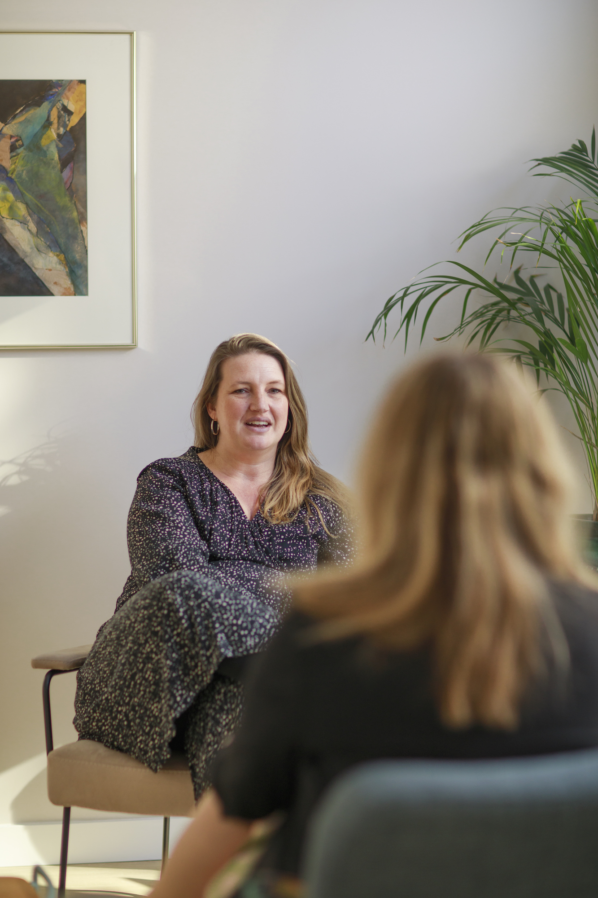
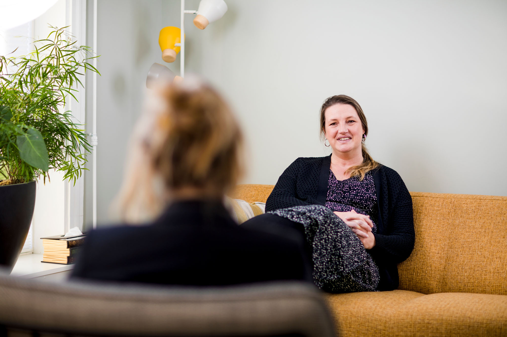

Welkom!
Het is fijn dat je hier bent. Het nemen van actie om hulp te zoeken is een belangrijke stap. Ik ben hier om jou, jouw kind of jouw gezin te helpen bij problemen op het gebied van gedrag, emoties en sociale relaties.
Mijn praktijk, In Mijn Humm, te Amsterdam Zuid, is open op maandag, dinsdag en donderdag. Ik werk nauw samen met een aantal andere, zelfstandige professionals, waaronder een systeemtherapeut, gezinscoach, twee psychiaters en een mede-GZ-psycholoog. Samen kunnen wij een breed scala aan behandelingsopties bieden voor verschillende vragen.
Diensten
Binnen In Mijn Humm kun je terecht voor veel verschillende soorten klachten, onder andere: Aandacht- en concentratieproblemen, (Milde) stemmingsklachten, Angstklachten, Trauma, (gecompliceerde) Rouw, Levensfaseproblematiek, Opvoed- en gedragsproblemen en Problemen met het zelfbeeld.
De wachttijd voor een intake is op dit moment ongeveer 4 tot 6 weken.
Behandeling
In Mijn Humm biedt behandelingen voor diverse soorten klachten. Mijn specialisatie ligt in het behandelen van stemmingsproblemen, angstklachten, trauma, rouw en ADHD. Naast diverse protocollaire behandelingsopties, waarvan velen wetenschappelijk bewezen effectief zijn, stem ik de behandeling af op de specifieke cliënt en diens situatie.
Diagnostiek
Om klachten efficiënt te begrijpen en behandelen, is het belangrijk om inzicht te krijgen in hun ontstaansgeschiedenis en welke factoren er momenteel van invloed zijn. Dit kunnen we doen door verschillende diagnostische methoden in te zetten, die in overleg met de cliënt worden gekozen. Deze kunnen variëren van intelligentieonderzoek tot vragenlijsten, observaties en meer.
Samenwerkingen
Waar nodig kan een samenwerking met collega's worden ingezet die op dezelfde locatie werken. Daarnaast hebben we ook samenwerkingen met andere praktijken gericht op leren en coaching. Deze samenwerkingen worden in overleg overwogen en ingezet.
I offer intake, assessment, and treatment in English. However, most assessment materials, such as questionnaires, are only available in Dutch. If needed, clients can ask someone in their network to assist with translation. If that is not possible, we can schedule an appointment where I can assist in translating the questionnaires for you.

Vergoeding
In het kader van vrije artsenkeuze vergoeden zorgverzekeraars niet-gecontracteerde zorg wel, zij het vaak voor een gedeelte. Verzekeraars hanteren hierbij een eigen uurtarief, dat vaak afwijkt van het uurtarief van de Nederlandse Zorgautoriteit. Van dat uurtarief wordt vaak maar een bepaald percentage vergoed, afhankelijk van het soort polis dat je hebt. Daarnaast wordt in principe eerst het eigen risico (meestal €385 in 2026) aangesproken.
Zelf betalen
Voor zowel kind en jeugd als voor 18+ kun je als zelfbetaler bij mij aanmelden. De factuur wordt dan aan jou (of je ouders) gestuurd en jij betaalt deze zelf. Hierin heb je geen verplichtingen naar, en hoeft niet te worden voldaan aan allerhande regelgeving van, jouw gemeente (18-) dan wel jouw zorgverzekeraar (18+). Een uitzondering hierop zijn cliënten die bij de Achmea Koepel zijn verzekerd, aangezien ik met deze verzekeraars een contract heb.
Kind & jeugd 18-
Sinds 2025 heeft de gemeente Amsterdam de wijze van financiering veranderd en ervoor gekozen om minder instellingen en praktijken te contracteren. Helaas betekent dat dat wij geen vergoede zorg meer leveren voor kinderen onder de 18 jaar. Er bestaat nog wel de mogelijkheid om de zorg zelf te betalen.
Volwassenen 18+
Per 1 januari 2023 heb ik een contract afgesloten met de Achmea koepel, waardoor verzekerden van Zilveren Kruis, Interpolis, FBTO en De Friesland hun zorg direct vergoed krijgen. Declaraties worden rechtstreeks met deze zorgverzekeraars afgehandeld. In navolging van mijn eerdere besluit om contractvrij te werken, heb ik met andere zorgverzekeringen nog steeds geen contract afgesloten. Zij zullen echter wel het merendeel van je behandeling vergoeden. Voor meer informatie en achterliggende ideeën van mijn keuze kun je terecht op contractvrijepsycholoog.nl.
Contact
Des Présstraat 12, 1075 NX, Amsterdam
Bereikbaarheid & Crisissituaties
Ik ben doorgaans bereikbaar op maandag, dinsdag en donderdag tussen 9:00 en 17:00. Buiten deze dagen check ik mijn berichten minder frequent. Bij afwezigheid (zoals vakantie of ziekte) vermeld ik dit duidelijk in al mijn communicatie.
Bij een mogelijk verwachte crisissituatie maken we vooraf afspraken over mijn bereikbaarheid en eventuele vervanging. Bij onverwachte nood mag er contact worden opgenomen. Ben ik bereikbaar, kijken we samen wat helpend is. Ben ik niet bereikbaar, neem dan contact op met de huisarts of de huisartsenpost (buiten kantoortijden) (088-0030600 in Amsterdam) of met de crisisdienst (020-5235433).
Veel Gestelde Vragen
Wat is de wachttijd voor behandeling?
De wachttijd voor intake, onderzoek en behandeling varieert. De meest recente wachttijd is hier te vinden.
Wat zijn de kosten voor behandeling?
Voor 2026 heeft de NZa weer nieuwe tarieven opgesteld die ik volg. De meest gebruikte tarieven zijn:
| Intake/diagnostiek | 45 min | €174,83 |
| Intake/diagnostiek | 60 min | €200,99 |
| Behandeling | 45 min | €149,82 |
| Behandeling | 60 min | €177,89 |
Voor een volledig overzicht kun je hier terecht op mijn website.
Wordt de behandeling vergoed?
Ik heb een contract afgesloten met de koepel van het Zilveren Kruis, waardoor cliënten ouder dan 18 jaar, die verzekerd zijn bij Zilveren Kruis, FBTO, Interpolis of de Friesland zowel de intake/diagnostiek als behandeling volledig vergoed krijgen. Hierbij moet er wel rekening mee worden gehouden dat de verzekering eerst het eigen risico aanspreekt.
Voor cliënten die elders verzekerd zijn, geldt dat zij een percentage vergoed krijgen. Je kunt het beste contact leggen met je verzekeraar om uit te zoeken hoeveel dat in jouw geval is.
Om voor vergoeding in aanmerking te komen, moet ik wel een DSM-classificatie stellen op basis van de intake of nader onderzoek.
Voor cliënten jonger dan 18 jaar wordt zorg bij mij helaas niet vergoed, omdat ik geen contract heb met de gemeente Amsterdam (of omstreken). De zorg zou wel zelf gefinancierd kunnen worden, voor wie daar de mogelijkheden toe heeft.
Welke therapievormen bied je aan?
Ik maak over het algemeen veel gebruik van cognitieve gedragstherapie (CGT) en varianten daarop, zoals Acceptance and Commitment Therapy (ACT) en schematherapie (ST). Daarnaast maak ik regelmatig gebruik van EMDR en andere trauma-georiënteerde therapieën, waaronder imaginaire exposure, rescripting en schrijftherapie.
Op basis van jouw klachten en hulpvraag zullen we samen een behandelplan opstellen en bepalen welke vorm van therapie voor jou het best passend is.
Waar vindt de therapie plaats?
Ik werk zoveel mogelijk face-to-face waarbij de afspraken fysiek, op de praktijk plaatsvinden, aan de Des Présstraat 12 te Amsterdam. In sommige gevallen combineer ik dat met online sessies, met name als we elkaar al wat beter kennen, er een duidelijk behandelplan is, en ik mij comfortabel genoeg voel om de behandeling deels op afstand uit te voeren. Veiligheid vind ik hierin erg belangrijk.
Kan de therapie ook in een andere taal plaatsvinden?
Ja dat kan zeker. Ik kan de intake en behandeling zowel in het Nederlands als in het Engels uitvoeren.
Hoe kan ik mij aanmelden?
Je kunt je aanmelden via de knop "Aanmelden" rechts bovenaan de pagina van mijn website of via deze link. Ook kun je via het contactformulier een eerste contact leggen.
Vaak is de eerste stap daarna om een (kort) telefonisch contact te hebben, waarin we in hoofdlijnen bespreken wat je klachten zijn, waar je naar op zoek bent en wat ik kan bieden en wat de praktische aspecten zijn. Van daaruit kunnen we dan allebei een eerste inschatting maken of we denken dat we samen verder zouden kunnen in het therapeutische proces.